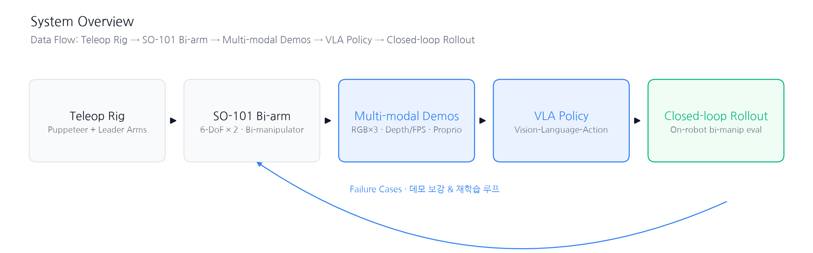
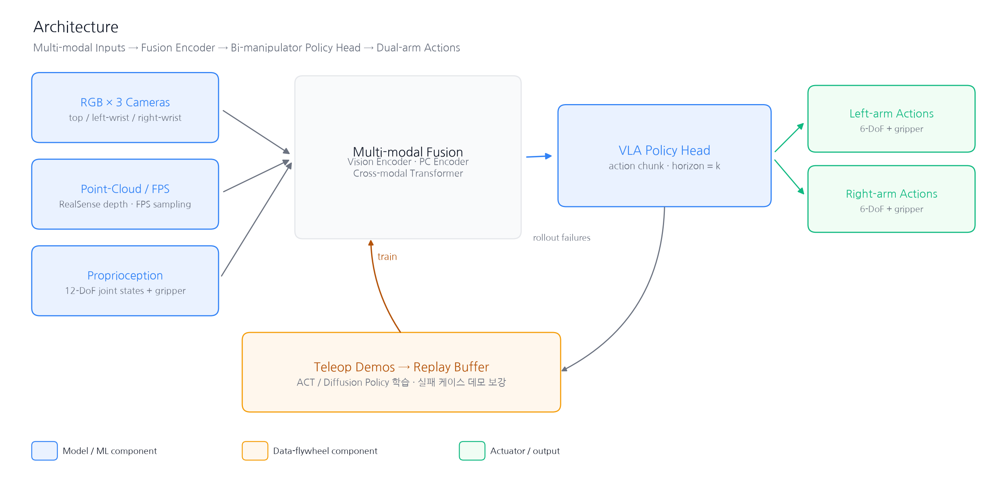
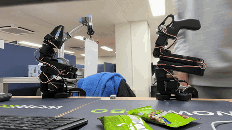
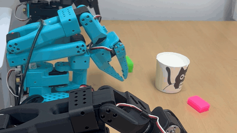
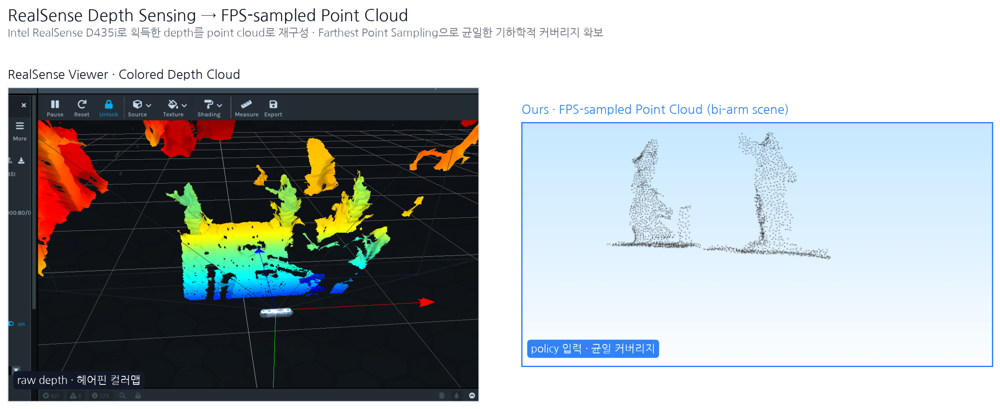
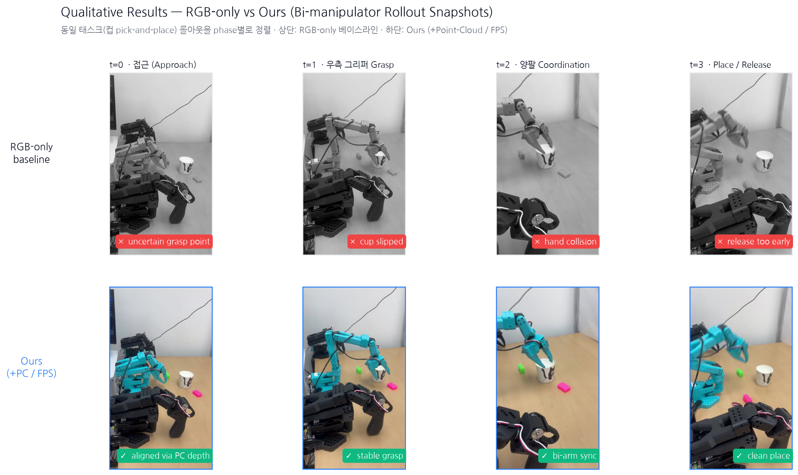

RGB만 사용하는 imitation policy는 물체 위치 암기(location memorization)와 포즈 헛발(pose hallucination)에 취약해, 학습 분포에서 벗어난 배치에서 실패가 잦다.
Bi-manipulator 세팅에서는 두 팔의 협조가 필요해 이 문제가 더 뚜렷해진다.




실기 로봇 데이터 수집부터 정책 학습·closed-loop 평가까지 VLA 학습 파이프라인 전 구간을 end-to-end로 경험한 것이 이 프로젝트의 성과이다. Point-Cloud (FPS) 기반 grounding과 3-camera + proprioception fusion을 통해 RGB-only 대비 location memorization / pose hallucination 완화 방향의 구조적 설계를 검증하였다.

* 위 비교 이미지는 구조적 설계 의도를 전달하기 위한 일러스트레이션이다. 정량 벤치마크(성공률·궤적 오차 등)는 실기 롤아웃 데이터가 확보되는 대로 별도 보고 예정.